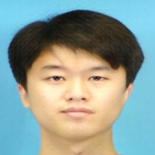

人脸照片合成的调查
感谢您抽出时间参加我们的用户研究!应该不需要很长时间就能完成。
请确保在继续之前仔细阅读以下说明。
为什么素描合成人脸照片？
人脸照片在使用中有很多应用，如人脸检测、人脸识别等。例如，在确定嫌疑人身份时，我们往往不能直接获取到人脸照片，只能根据目击者的描述绘制出嫌疑人的素描。
艺术家绘制的素描和参考图片如下例所示。
 |
|
素描 |
参考图 |
我们可以通过各种方法把素描合成人脸照片(如下例所示)
 |
 |
方法一 |
方法二 |
我在本次调查扮演什么角色?
我们会让你告诉我们你更喜欢哪一种方法的人脸合成照片。
在填写一些细节之后，您将看到一系列的比较，每个比较都集中在两张人脸合成照片。您将得到素描（由艺术家绘制）和参考照片，您需要比较两种方法的合成效果，并根据内容相似性和质量选择您喜欢的人脸合成照片。
请注意，虽然看起来有些结果是相似的，或者有些比较是重复的，但事实并非如此。
在某些情况下，差异是相当微妙的，我们已经尽力为您提供足够的工具来帮助做出您的决定。
还请记住，您可以使用ctrl+鼠标滚轮来放大/缩小以获得更仔细的效果(您现在可以在下面的图像上尝试)。
技术支持：
这个调查是最好使用高查看屏幕分辨率(≥1024 x768)。
Firefox和谷歌Chrome是首选浏览器，如果可能的话，应该避免使用其他浏览器。
请注意，为了使调查正常工作，应该启用javascript。
就是这样!你可以进行了!
按“开始”键开始调查。